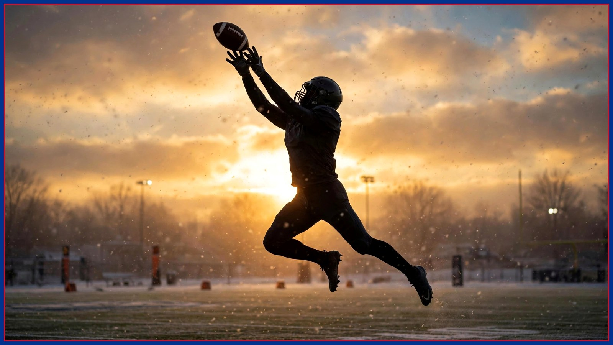

DJ Moore picked Buffalo. Buffalo should return the favor.
A new receiver, a new city, and a fan base that adopts its players like family. What the DJ Moore era has to get right off the field before it works on it.

Let's start with something that doesn't happen by accident: DJ Moore is a Buffalo Bill because Buffalo went and got him from Chicago, yes — but players of his caliber have a say in where they land in this league, and Moore landed here with his eyes open. He picked the cold. He picked the smallest market in the conference. He picked us. The Culture Desk has one request: let's act like it.
Buffalo does something no other fan base in football does quite the same way. We adopt. A player shows up, works, respects the city, and within a season he's family — his charity gets flooded, his restaurant order becomes local news, his kids could run for mayor. It's the best recruiting pitch this franchise owns, better than any facility tour: come here and be loved like a son, as long as you give us everything on Sunday.
But adoption has a flip side, and this is where we have to be honest with ourselves. The same passion that lifts players up can turn a slow start into a verdict. Moore is coming back from a shoulder sprain — his return has been "expected" since before the bye, not confirmed — and a receiver's timing with a quarterback is built in weeks, not in one Sunday. If the first two games back are quiet, that is not a referendum on the trade. That is a guy learning where Josh Allen wants him at the top of a route while 70,000 of us hold our breath.
Here's what the Moore era needs off the field first: patience with a purpose. This offense doesn't need him to be a hero in November. It needs him to be the player defenses have to account for in January — the one who makes a coordinator choose between Cook, the tight ends, and a receiver who can take a slant to the house. That version of Moore arrives on a curve, not on a deadline.
There's a locker-room layer too. Moore walks into a room with an established hierarchy and a quarterback who is the sun everything orbits. The receivers who have thrived here are the ones who understood that early and made themselves essential inside it. Everything in Moore's career says he's a worker, not a diva. Trust the worker.
So here's the deal, Buffalo. He picked us — the city, the weather, the whole beautiful frozen package. Let's return the favor the Buffalo way: loud, patient, and all in. When No. 2 breaks his first big one at Highmark, the sound is going to tell him everything about where he landed.
Welcome home, DJ. Now let's go get you a January to remember.
The BNC Blitz is free: the day's Bills news, one stat that matters, and one take, every morning. Join to keep reading — and never miss the end of a story again.